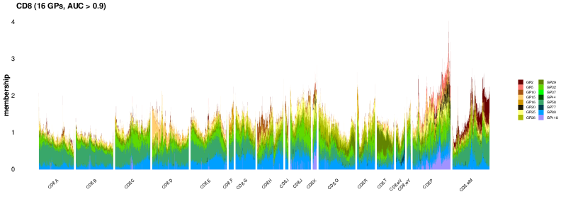
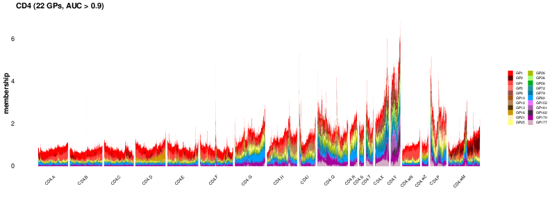
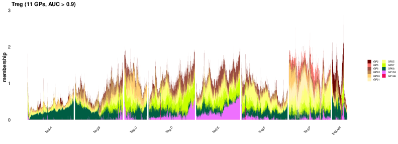
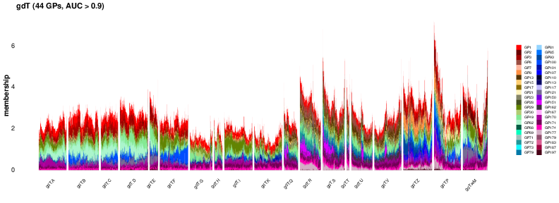
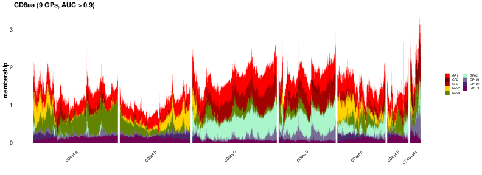
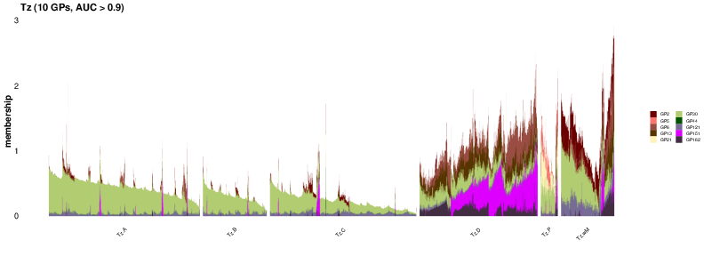

Last updated: 2026-09-09
Checks: 7 0
Knit directory:
immgenT-GP-analysis/analysis/
This reproducible R Markdown analysis was created with workflowr (version 1.7.2). The Checks tab describes the reproducibility checks that were applied when the results were created. The Past versions tab lists the development history.
Great! Since the R Markdown file has been committed to the Git repository, you know the exact version of the code that produced these results.
Great job! The global environment was empty. Objects defined in the global environment can affect the analysis in your R Markdown file in unknown ways. For reproduciblity it’s best to always run the code in an empty environment.
The command set.seed(1) was run prior to running the
code in the R Markdown file. Setting a seed ensures that any results
that rely on randomness, e.g. subsampling or permutations, are
reproducible.
Great job! Recording the operating system, R version, and package versions is critical for reproducibility.
Nice! There were no cached chunks for this analysis, so you can be confident that you successfully produced the results during this run.
Great job! Using relative paths to the files within your workflowr project makes it easier to run your code on other machines.
Great! You are using Git for version control. Tracking code development and connecting the code version to the results is critical for reproducibility.
The results in this page were generated with repository version a7a481f. See the Past versions tab to see a history of the changes made to the R Markdown and HTML files.
Note that you need to be careful to ensure that all relevant files for
the analysis have been committed to Git prior to generating the results
(you can use wflow_publish or
wflow_git_commit). workflowr only checks the R Markdown
file, but you know if there are other scripts or data files that it
depends on. Below is the status of the Git repository when the results
were generated:
Ignored files:
Ignored: .DS_Store
Ignored: .claude/
Ignored: analysis/.DS_Store
Ignored: analysis/.Rhistory
Ignored: analysis/assets/.DS_Store
Ignored: captions/
Ignored: code/.DS_Store
Ignored: code/other/topic_flashier_20250212.R
Ignored: code/other/topic_wrapper_20250215_alldata_backfit.sh
Ignored: data
Ignored: experiments/
Ignored: figures/.DS_Store
Ignored: figures/Previous/.DS_Store
Ignored: figures/Previous/bits/.DS_Store
Ignored: figures/Previous/bits/Figure 1/.DS_Store
Ignored: figures/Previous/bits/Figure 2/.DS_Store
Ignored: figures/Previous/bits/Figure 3/.DS_Store
Ignored: figures/Previous/bits/Figure 4/.DS_Store
Ignored: figures/Previous/bits/Figure 6/.DS_Store
Ignored: figures/Previous/bits/Figure 7/.DS_Store
Ignored: figures/Previous/bits/Figure S1/.DS_Store
Ignored: figures/Previous/bits/Figure S2/.DS_Store
Ignored: figures/Previous/bits/Figure S3/.DS_Store
Ignored: figures/Previous/bits/Figure S6/.DS_Store
Ignored: figures/Previous/bits/Figure S7/.DS_Store
Ignored: figures/final-selected/.DS_Store
Ignored: figures/final-selected/Figure 1/.DS_Store
Ignored: figures/final-selected/Figure 2/.DS_Store
Ignored: figures/final-selected/Figure 4/.DS_Store
Ignored: figures/final-selected/Figure S1/.DS_Store
Ignored: figures/templates_20260729/
Ignored: internal/
Ignored: log/
Ignored: output/.DS_Store
Ignored: output/Figure2/
Ignored: output/Figure7b/7b_cell_metadata.csv.gz
Ignored: plan/
Ignored: tables/
Ignored: tmp/
Note that any generated files, e.g. HTML, png, CSS, etc., are not included in this status report because it is ok for generated content to have uncommitted changes.
These are the previous versions of the repository in which changes were
made to the R Markdown (analysis/FigureS8.Rmd) and HTML
(docs/FigureS8.html) files. If you’ve configured a remote
Git repository (see ?wflow_git_remote), click on the
hyperlinks in the table below to view the files as they were in that
past version.
| File | Version | Author | Date | Message |
|---|---|---|---|---|
| html | a7a481f | Ziang Zhang | 2026-09-09 | Build site: the rebuilt Figure 1d and the Extended Data renumbering |
| Rmd | c233cd8 | Ziang Zhang | 2026-09-09 | Extended Data reorganisation: split the tissue/cluster figure, renumber 3-8 |
| html | 19c977f | Ziang Zhang | 2026-09-02 | Build site: Extended Data 5-7 renumbered, Figure S5 page rebuilt |
| Rmd | 1e5721a | Ziang Zhang | 2026-09-02 | Extended Data 5-7 renumbered, and Figure S5 assembled as one stacked figure |
| html | 232079e | Ziang Zhang | 2026-08-27 | Build site: Extended Data Figure 8 page added |
| Rmd | 659ff00 | Ziang Zhang | 2026-08-27 | Extended Data Figure 8: per-lineage cluster structure plots |
All panels are produced by script/FigureS8.R,
which shares its CITE-seq setup, gating logic and CD69 GP subset with Figure 6 via
code/R/citeseq_shared_setup.R and
code/R/gated_protein_helpers.R. The code below is shown for
reference (not re-executed on this page, since this script takes about a
minute to run); the images are its pre-rendered output.
library(ggplot2)
library(dplyr)
library(patchwork)
library(tidyr)
library(Matrix) # protein matrices are dgCMatrix; must be attached for `[` to dispatch
data_path <- "data/"
figure_path <- "figures/final-selected/Figure S8/"
source("code/R/gated_protein_helpers.R")
source("code/R/citeseq_shared_setup.R")
# Record when this run started, to assert at the end that every panel is newer.
run_started_at <- Sys.time()The ten GPs and their order are defined in
code/R/citeseq_shared_setup.R, so that these two panels and
Fig. 6d – which live in different
figures and therefore in different scripts – cannot disagree about which
GPs they show or in what order:
# The CD69-associated GP subset, shared by Figure 6d (the up/down gene heatmap)
# and Figure S7a/S7b (the same GPs' mean activity per tissue and per lineage).
# Defined once here because those panels live in two different scripts and must
# show the same GPs in the same axis order. Curated, not a computed top-10.
cd69_top_gps_subset <- c("GP35", "GP6", "GP170", "GP26", "GP58", "GP171", "GP63", "GP62", "GP3", "GP29")
shared_cells_cd69 <- intersect(rownames(L_pm_filtered), rownames(protein_mat_normalized_lognorm))
cd69_expr_vec <- protein_mat_normalized_lognorm[shared_cells_cd69, "CD69"]
cd69_corr <- sapply(cd69_top_gps_subset, function(gp) cor(L_pm_filtered[shared_cells_cd69, gp], cd69_expr_vec, method = "spearman"))
# most-correlated GP ends up at the top of the y-axis in all three panels
cd69_top_gps_sorted <- names(sort(cd69_corr, decreasing = FALSE))# ============================================================
# s8a/s8b: mean loading of the 10 curated CD69-associated GPs, per tissue (a)
# and per lineage (b). cd69_top_gps_sorted comes from citeseq_shared_setup.R
# and is the same GP order Figure 6d draws.
# ============================================================
cells_for_heatmap <- intersect(rownames(L_pm_filtered), rownames(seurat_meta_filtered))
L_cd69_sub <- L_pm_filtered[cells_for_heatmap, cd69_top_gps_sorted, drop = FALSE]
meta_hm <- seurat_meta_filtered[cells_for_heatmap, c("annotation_level1", "organ_simplified")]
mean_loading_long <- function(L_mat, group_vec, gp_levels) {
as.data.frame(L_mat) %>%
mutate(group = group_vec) %>%
tidyr::pivot_longer(cols = -group, names_to = "GP", values_to = "Loading") %>%
group_by(group, GP) %>%
summarise(mean_loading = mean(Loading, na.rm = TRUE), .groups = "drop") %>%
mutate(GP = factor(GP, levels = gp_levels))
}
make_mean_loading_heatmap <- function(df, title) {
fill_max <- max(df$mean_loading, na.rm = TRUE)
ggplot(df, aes(x = group, y = GP, fill = mean_loading)) +
geom_tile() +
scale_fill_gradient(low = "white", high = "firebrick", limits = c(0, fill_max), name = "Mean\nloading") +
labs(title = title, x = NULL, y = NULL) +
theme_minimal(base_size = 9) +
theme(axis.text.x = element_text(angle = 45, hjust = 1, size = 9), axis.text.y = element_text(size = 9), panel.grid = element_blank())
}
df_organ <- mean_loading_long(L_cd69_sub, meta_hm$organ_simplified, cd69_top_gps_sorted)
p_s8a <- make_mean_loading_heatmap(df_organ, "Mean GP loading by tissue (organ_simplified)")
ggsave(paste0(figure_path, "s8a.pdf"), p_s8a, width = 9, height = 5)
df_level1 <- mean_loading_long(L_cd69_sub, meta_hm$annotation_level1, cd69_top_gps_sorted)
p_s8b <- make_mean_loading_heatmap(df_level1, "Mean GP loading by cell type (level1)")
ggsave(paste0(figure_path, "s8b.pdf"), p_s8b, width = 7, height = 5)

Extended Data Fig. 8a, b. Mean activity of the ten CD69-associated GPs (a) across tissues and (b) across lineages.
# ============================================================
# s8c-s8f: protein-gate vs. GP-loading comparison for the 4 curated
# supplementary GPs. Same helper, same inputs and same panel geometry as
# Figure 6e-6j -- only the GPs differ, and the two sets are disjoint.
# ============================================================
# As in Figure6.R, the loop iterates over the names of the letter map so a GP
# cannot be drawn under another GP's letter.
figs8_gating <- c("GP29" = "s8c", "GP58" = "s8d", "GP22" = "s8e", "GP68" = "s8f")
for (gp in names(figs8_gating)) {
k_name <- paste0("K", sub("^GP", "", gp))
plot_gated_gp_vs_protein(
gp_name = k_name,
df_markers = df_markers2,
protein_mat = protein_mat_normalized_lognorm,
loading_mat = L_pm_for_gating,
mde_emb = mde_result,
missing_threshold_action = "skip",
threshold_df = threshold_results_subset_manual,
exclude_cells = c(thymocyte_cells, proliferating_cells, miniverse_cells),
selected_proteins = select_proteins,
loading_q = NULL,
min_pointsize = if (gp %in% enlarge_gps) 3L else 0L,
save_path = paste0(figure_path, figs8_gating[gp], ".pdf")
)
}



Extended Data Fig. 8c-f. Examples of gating strategies used to identify GP-active cells for (c) GP29 (CD8aa gdT or ab T cell specific), (d) GP58 (CD8-specific), (e) GP22 (DN-specific), and (f) GP68 (Treg-specific).
sessionInfo()R version 4.5.1 (2025-06-13)
Platform: aarch64-apple-darwin20
Running under: macOS Sequoia 15.6.1
Matrix products: default
BLAS: /System/Library/Frameworks/Accelerate.framework/Versions/A/Frameworks/vecLib.framework/Versions/A/libBLAS.dylib
LAPACK: /Library/Frameworks/R.framework/Versions/4.5-arm64/Resources/lib/libRlapack.dylib; LAPACK version 3.12.1
locale:
[1] en_CA/en_CA/en_CA/C/en_CA/en_CA
time zone: America/Chicago
tzcode source: internal
attached base packages:
[1] stats graphics grDevices utils datasets methods base
loaded via a namespace (and not attached):
[1] vctrs_0.7.3 cli_3.6.6 knitr_1.50 rlang_1.2.0
[5] xfun_0.55 stringi_1.8.9 otel_0.2.0 promises_1.5.0
[9] jsonlite_2.0.0 workflowr_1.7.2 glue_1.8.1 rprojroot_2.1.1
[13] git2r_0.36.2 htmltools_0.5.9 httpuv_1.6.16 sass_0.4.10
[17] rmarkdown_2.30 evaluate_1.0.5 jquerylib_0.1.4 tibble_3.3.0
[21] fastmap_1.2.0 yaml_2.3.12 lifecycle_1.0.5 whisker_0.4.1
[25] stringr_1.6.0 compiler_4.5.1 fs_1.6.6 Rcpp_1.1.1-1.1
[29] pkgconfig_2.0.3 later_1.4.4 digest_0.6.39 R6_2.6.1
[33] pillar_1.11.1 magrittr_2.0.5 bslib_0.9.0 tools_4.5.1
[37] cachem_1.1.0